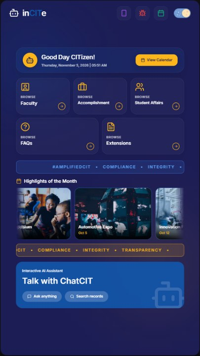

Project image: assets/img/projects/project1.jpgInCITe
Interactive Conversational Information Terminal Experience
Role: Data Manager & Kiosk Designer
InCITe is an AI-powered conversational information system integrated into a physical kiosk. It is designed to provide students, faculty, and staff of the College of Industrial Technology at Bulacan State University with accurate, timely, accessible, and user-friendly access to CIT-related institutional information.
GitHub repository and live demo: not yet provided.